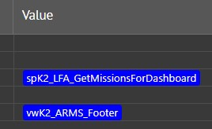
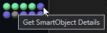
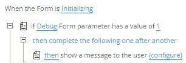

Welcome to the SmartForm Assistant beta! Here’s a little information about how to use it.
There are five tabs in the Assistant.
- Data Explorer – This shows every property in the design of the form, view and controls.
- You can edit data labels and the changes are posted to the form. Being able to edit data
label values at runtime is a significant time saver. Just make sure you refresh the data
explorer to get the latest values before you update.
- Click on a blue smartObject, this will show you the contents of the SmartObject, which is
great for checking properties conditional formatting is bound to.

- If you click a Control, you will be shown the rules where this control is referenced.
- Rules – A keyboard navigable list of the form or view’s rules.
- The most important thing to know about the debugger is this tab
represents a translation of the internal XML rules back into human readable rules. It may not be
a perfect translation but it will be close enough to remind you of the actual rule.
- The XML Runtime rules are not as extensive as the rules as design time. For instance they don’t
contain the names of controls referred to on subforms, expression names or details about views
opened by buttons.
- Events – A runtime list of the events and actions as they are executed. When you see the output,
you’ll know why some of those forms were so hard to debug!
- Click an event to see the definition of that event.
- Right click actions, such as “then execute”, or controls and select Defintion… to navigate to
the definition.
- The SmartObject execution can be expanded to show the parameters used in the SmartObject call.
- There are check boxes in the rules to enable a “breakpoint” of sorts at that action. This
functionality is still in the works.
- Settings
-
Check your license details.
- Show GUIDs. Turn on to show guids in the data explorer.
- Copy the Support email address.
- Information – This tab.
Additional Notes:
-
The first time the Assistant runs, it starts K2’s Designer, if the designer isn’t already running it may take a while to respond and you will see a flashing indicator light for "Get SmartObject Details".

- Unfortunately the SmartObject method names in XML are encrypted for most K2 installations, including the cloud and cannot be displayed.
- The goal was for the debugger be able to run without any modification to a form but the debugger can’t load before Initialize unless a user message is added to the init event. This gives the debugger time to load the controllers and rules. I add these actions, which allows the Assistant to load and capture events after you close the message.

- I have tested this on a good range of forms, but not every form and as this is reverse engineering there map be gaps in the mapping.
- In the event your rules or forms break the debugger, it would be very helpful to get a copy of the controller and rule XML. The functionality to send those easily, is in development now.
- The core engine which translates the rules, runs in an NodeJS environment. This means your rules (not the form layout) are sent to be de-compiled. They are not stored or recorded in any fashion, unless you explicitly send them via item 4.
- You may experience a “cold start” delay of a few seconds the first time the debugger processes your rules.
- Right clicking items within the output will let you view References or Definitions.
- I’d love to hear about your experience with the degbugger. Please email support if you have any ideas or comments, issues are welcome.
I hope you enjoy the Assistant!